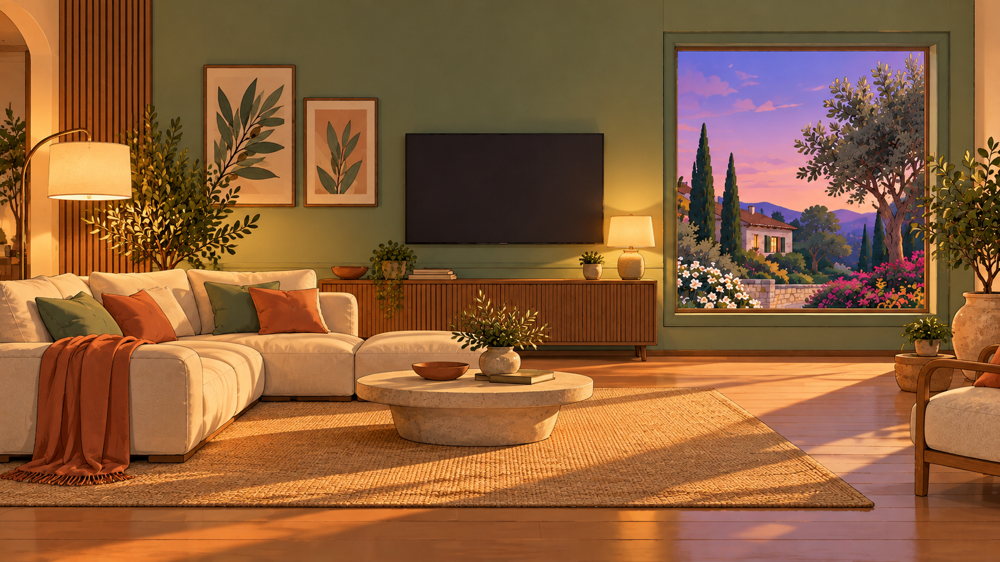
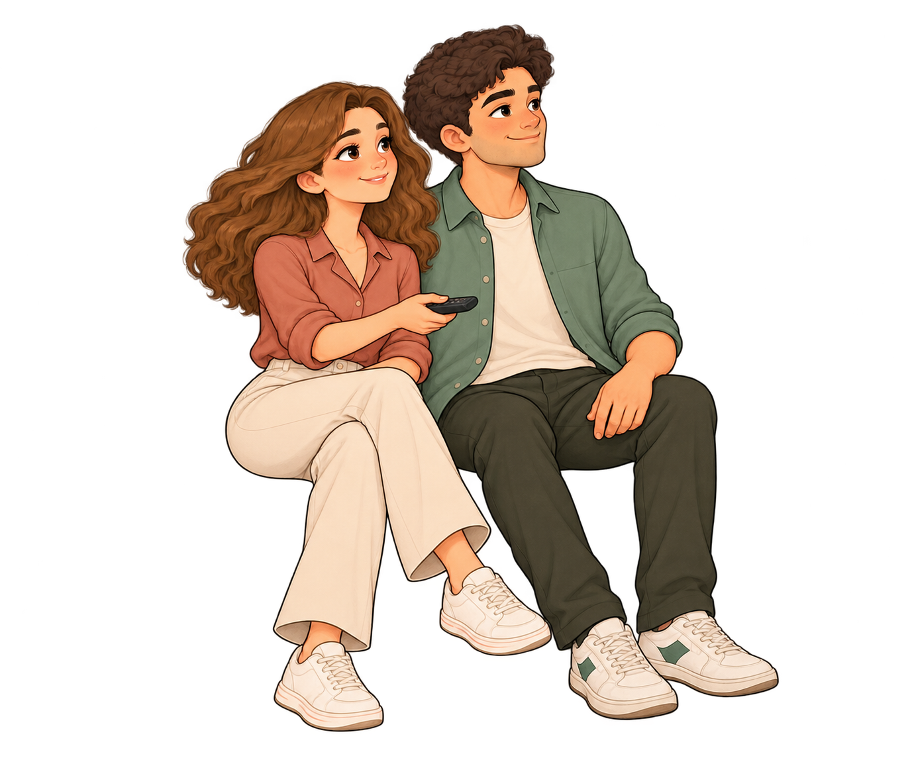

Una giornata smart · Clip 07
Il vostro momento di relax.
La TV si accende e la scena relax abbassa automaticamente le luci, per guardare un film insieme.


Una giornata smart21:00La casa segue il vostro ritmo.
LEILei
Una giornata smartUn film. L’atmosfera giusta.
00:0000:15
07 / 08 · Un film insieme